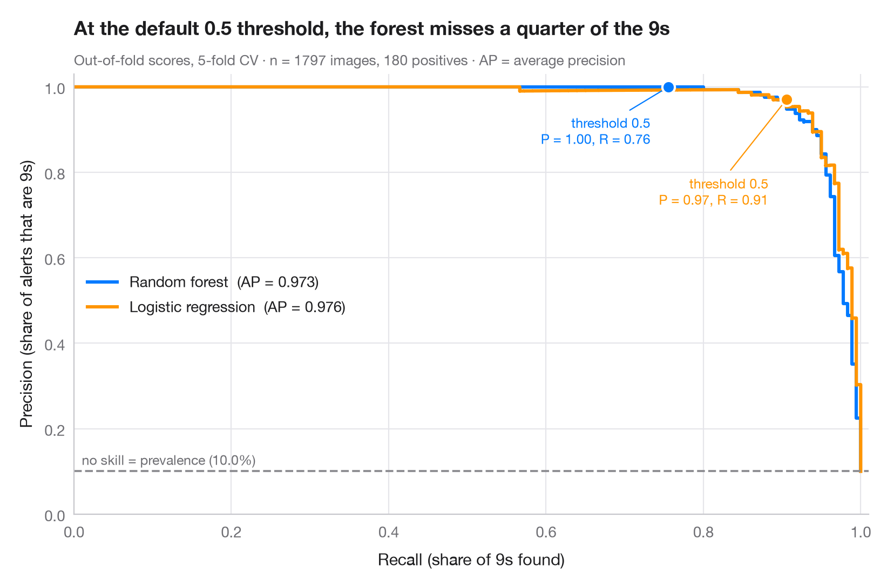

適合率–再現率曲線
COVID-19 のフェイクニュースを共有する Facebook ユーザーを予測する 2 つの分類器の、交差検証による適合率–再現率曲線。平均適合率と無技能の基準線を示します。

陽性クラスが少数派の場合、ROC 曲線は優れて見えても、警告の多くが誤りということがあります。適合率–再現率曲線は実務上の問いに答えます。陽性のこの割合を見つけたい（再現率）とき、警告のうちどれだけが正しいか（適合率）。各点がひとつの判定しきい値に対応します。破線は無技能のベースライン、すなわち陽性クラスの有病率で、各曲線の下の面積は 平均適合率（AP）で要約されます。
例の舞台は、COVID-19 に関するフェイクニュースの Facebook での共有を混合研究法で調べた Melchior、Warin、Oliveira（2025 年、Technological Forecasting and Social Change）の研究です。データは説明のために シミュレーション したもので、論文のデータや結果では ありません。n = 3,000 人のユーザーのうち約 8 人に 1 人がフェイクニュースを共有しており、年齢、1 日の Facebook 利用時間、参加している COVID-19 グループの数、既存メディアへの信頼、陰謀論への傾倒、フェイクニュースを共有した友人の割合で表されます。スコアは 5 分割交差検証による out-of-fold の確率（cross_val_predict(method="predict_proba")）で、曲線と AP は precision_recall_curve と average_precision_score によります。マーカーは各曲線上の既定のしきい値 0.5 を示します。まれなクラスでは、このしきい値で拾えるのは共有者のごく一部です。
コードおよび図中のテキストは英語です。
import matplotlib.pyplot as plt
import numpy as np
import pandas as pd
from sklearn.ensemble import RandomForestClassifier
from sklearn.linear_model import LogisticRegression
from sklearn.metrics import average_precision_score, precision_recall_curve
from sklearn.model_selection import StratifiedKFold, cross_val_predict
from sklearn.pipeline import make_pipeline
from sklearn.preprocessing import StandardScaler
# Simulated data, set in the context of Melchior, Warin & Oliveira (2025) [melchior2025fake]
# Data: 3,000 Facebook users; 1 = shared a COVID-19 fake-news post (a minority class)
rng = np.random.default_rng(2024)
n = 3000
X = pd.DataFrame({"age": rng.integers(18, 80, n), # years
"hours": rng.gamma(2, 0.9, n), # daily hours on Facebook
"groups": rng.poisson(3, n), # COVID-19 groups joined
"trust_media": rng.integers(1, 8, n), # 1-7 scale
"conspiracy": rng.integers(1, 8, n), # 1-7 scale
"friends_shared": rng.beta(1, 8, n)}) # share of friends who shared
logit = (-4.3 + 0.025 * (X.age - 45) + 0.35 * X.hours + 0.15 * X.groups
- 0.3 * (X.trust_media - 4) + 0.45 * (X.conspiracy - 4) + 6 * X.friends_shared)
y = (rng.random(n) < 1 / (1 + np.exp(-logit))).astype(int).to_numpy()
prevalence = y.mean()
models = {
"Random forest": RandomForestClassifier(n_estimators=300, min_samples_leaf=5, random_state=0),
"Logistic regression": make_pipeline(StandardScaler(), LogisticRegression(max_iter=2000)),
}
palette = ["#007AFF", "#FF9500"]
cv = StratifiedKFold(n_splits=5, shuffle=True, random_state=0)
recall = {}
fig, ax = plt.subplots(figsize=(8, 5.2))
for (name, model), c in zip(models.items(), palette):
score = cross_val_predict(model, X, y, cv=cv, method="predict_proba")[:, 1]
prec, rec, thr = precision_recall_curve(y, score)
ap = average_precision_score(y, score)
ax.step(rec, prec, where="post", color=c, lw=2.2, label=f"{name} (AP = {ap:.3f})")
k = np.argmin(np.abs(thr - 0.5)) # the default threshold
recall[name] = rec[k]
ax.scatter(rec[k], prec[k], s=70, color=c, edgecolor="white", lw=1.5, zorder=4)
ax.annotate(f"threshold 0.5\nP = {prec[k]:.2f}, R = {rec[k]:.2f}", (rec[k], prec[k]),
xytext=(40, -110) if c == palette[0] else (14, 26), textcoords="offset points",
ha="left", fontsize=9, color=c,
arrowprops=dict(arrowstyle="-", color=c, lw=0.8))
ax.axhline(prevalence, color="#8E8E93", ls="--", lw=1.4)
ax.text(0.01, prevalence + 0.015, f"no skill = prevalence ({prevalence:.1%})", fontsize=9, color="#6E6E73")
ax.set_xlim(0, 1.01)
ax.set_ylim(0, 1.03)
ax.set_xlabel("Recall (share of fake-news sharers who are flagged)")
ax.set_ylabel("Precision (share of flagged users who shared)")
ax.grid(axis="x")
ax.legend(loc="upper right")
ax.set_title(f"At the default 0.5 threshold, logistic regression flags only {recall['Logistic regression']:.0%} "
"of fake-news sharers", pad=26)
ax.text(0, 1.02, f"Out-of-fold scores, 5-fold CV · n = {n:,} users (simulated), {y.sum():,} shared fake news · "
"AP = average precision", transform=ax.transAxes, fontsize=9.5, color="#6E6E73")
plt.show()
図にはオプションの PyStatlas スタイル を使用しています。同じ見た目にするには plt.style.use("pystatlas.mplstyle") を追加してください。
データの出典
- Simulated data. Simulated data with a fixed random seed, created for this example.
No real respondents, documents or measurements: the numbers only illustrate how the chart and its statistics work. - Melchior, Warin & Oliveira (2025), COVID-19 fake-news sharing on Facebook. Melchior, C., Warin, T., & Oliveira, M. (2025). An investigation of the COVID-19-related fake news sharing on Facebook using a mixed methods approach. Technological Forecasting and Social Change, 213, 123969. https://doi.org/10.1016/j.techfore.2024.123969
The example is set in the context of this paper; unless its description says otherwise, the numbers are simulated and are not the paper's data or results.
これらの例は統計手法を説明するためのものです。項目に別の記載がない限り数値はシミュレーションであり、図のタイトルはこのシミュレーションデータで図が示す内容を述べたものです。引用した論文の知見でも、実質的な問いに対する著者の立場でもありません。結果、背景、データについては、ここに挙げた論文を参照してください。
引用方法
PyStatlas は Thierry Warin が作成・運営しています。研究や業務に役立った場合は、ぜひ引用してください。
Warin, T. (2026). Precision–recall curves. In PyStatlas: A Python Gallery of Statistical Graphics for the Social Sciences (Version 1.1.0) [Computer software]. https://warint.github.io/pystatlas/machine-learning/precision-recall/
@misc{warin2026statlas,
author = {Warin, Thierry},
title = {PyStatlas: A Python Gallery of Statistical Graphics for the Social Sciences},
year = {2026},
version = {1.1.0},
howpublished = {\url{https://warint.github.io/pystatlas/}},
note = {Source code: https://github.com/warint/pystatlas}
}機械学習のその他のグラフ

指標付き混同行列
分類器がツイートを環境・社会・ガバナンスのトピックにどれだけ正しく振り分けるか。交差検証による 3 × 3 の混同行列に、指標のブートストラップ区間を添えます。
yardstick::conf_mat() + autoplot()
学習曲線
学習データが増えるにつれての学習時正解率と交差検証正解率。COVID-19 のフェイクニュースを共有する Facebook ユーザーを予測する 2 つのモデルで比べます。
caret::learning_curve_dat() + ggplot()
交差検証によるモデル比較
生産ロットの廃棄率を予測する 6 つのモデルの分割ごとの R²。平均と補正済み 95% 区間を添えます。
caret::resamples() + bwplot() / tune::autoplot()